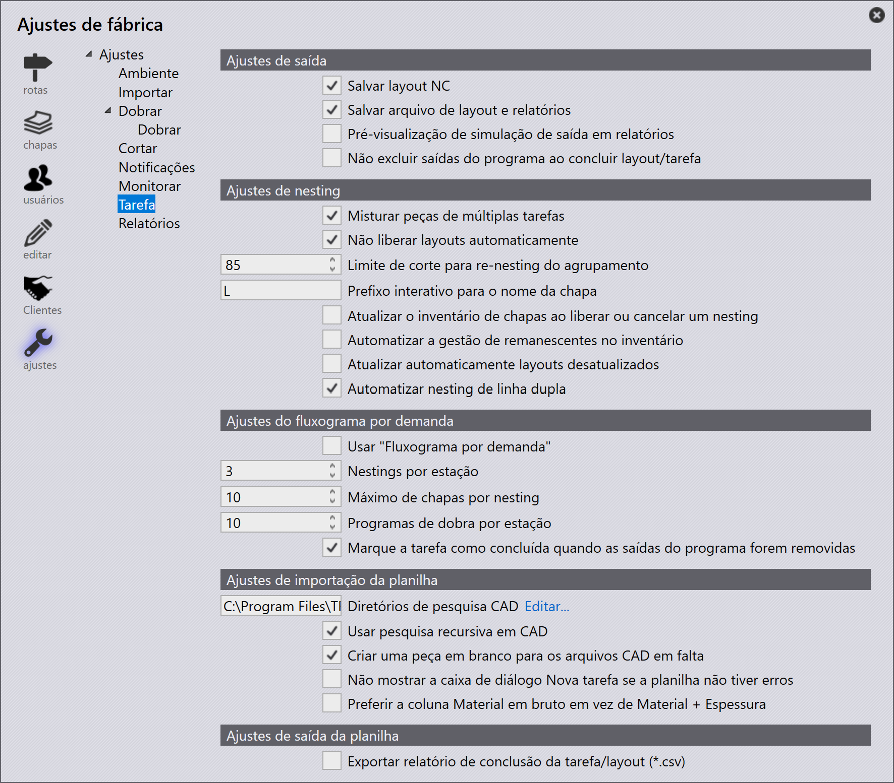

Job

Output settings
Save layout NC and reports - Habilite esta opção para que o NC de layout e os relatórios sejam salvos.
Save layout file - Habilite esta opção para que o arquivo de layout seja salvo.
Output simulation preview in reports - Habilite esta opção para gerar a pré-visualização da simulação de ferramental juntamente com as outras saídas. Esta é uma animação GIF curta para o ferramental de laser/punção.
Do not delete program outputs on layout/job completion - Habilitar esta opção ignorará a operação de exclusão para as saídas do programa quando uma tarefa/layout for marcado como concluído.
Nest settings
Mix parts from multiple Jobs - Suporta nesting em modo misto. Peças de múltiplas tarefas devem ser aninhadas juntas para melhor eficiência de aproveitamento.
Do not auto-release layouts - Isso impedirá que os layouts estejam disponíveis para produção até que todos os layouts estejam em estado liberado.
Re-nesting packing cut-off - Este valor é usado para decidir se um layout aninhado é mantido na fila de aprovação e é aninhado novamente quando novas peças são planejadas ou se são liberadas para produção e as saídas relacionadas são exportadas para a pasta de saída.
Interactive sheet-name prefix - Esta seção é usada para suportar nesting interativo onde o usuário tem mais controle sobre as peças sendo aninhadas e o resultado do nesting. Use um esquema de nomenclatura, diferente do auto-nesting, para os layouts aninhados interativamente.
Update sheet inventory on nest (un)release - Se esta opção estiver habilitada, o inventário de chapas será atualizado ao enviar um nesting para uma máquina. Além disso, recolher o nesting da máquina retornará a chapa ao inventário.
Automate remnant inventory management - Quando esta opção está selecionada, o software automatiza o gerenciamento de inventário de retalhos. Se não estiver selecionada, o gerenciamento de retalhos se torna interativo.
Auto-refresh Out-of-date layouts - Quando marcada, o software atualiza todos os Out-of-date Layouts vinculados a uma peça após suas soluções de corte serem calculadas.
Automate twin-line nesting - Marque esta opção para habilitar a automação de twin-line.
Pull workflow settings
Use 'Pull workflow' - Esta opção é útil para usuários que necessitam de um sistema de planejamento e nesting altamente autônomo. Quando habilitada, o TruSmartCAM planeja o nesting sob demanda.
Nests per station - Este valor define quantos layouts por estação devem ser criados.
Maximum sheets per nest - Este valor é usado para controlar a contagem máxima de chapas contra o nesting único. Assim, por exemplo, se houver um pedido com uma peça grande (que preenche toda a chapa), necessária em grandes quantidades (digamos 500) - o TruSmartCAM não cria mais um único nesting com 500 cópias no modo pull. Em vez disso, ele cria 10 cópias por nesting, onde 10 é o máximo.
Bend programs per station - Este valor define quantos programas de dobra por estação devem ser criados.
Mark the task completed, when the program outputs are removed - Habilite esta opção para que um layout seja marcado como Concluído quando as saídas forem removidas do destino de saída.
Spreadsheet import settings
CAD lookup directories - O TruSmartCAM tentará carregar a entrada de peça mencionada no CSV importado a partir da biblioteca de peças. No entanto, se a peça não estiver disponível na biblioteca de peças, ele tentará buscar as peças nos diretórios de consulta com base na ordem dos diretórios definidos neste diálogo.
Use recursive CAD search - Habilite esta opção para que a pesquisa seja repetida para resultados sucessivos.
Create a blank part for the missing CAD files - Se as peças não existirem na biblioteca do TruSmartCAM ou nos diretórios de consulta, o TruSmartCAM criará uma peça em branco para essas peças indisponíveis.
Do not show New Job dialog if the spreadsheet has no error - Se as entradas do CSV estiverem corretas, ou seja, sem incompatibilidade de dados do BD ou todos os campos estiverem listados corretamente, o TruSmartCAM não exibirá a janela de visão geral da tarefa e processará a tarefa assim que o CSV for importado ou arrastado.
Prefer Raw-Material column over Material + Thickness - Tipos de planilha suportados:
-
Pattern 1: PartName, Quantity, DueDate, Priority, RawMaterial
-
Pattern 2: PartName, Quantity, DueDate, Priority, Material, Thickness
-
Pattern 3: PartName, Quantity, DueDate, Priority, Material, Thickness, RawMaterial
Se esta opção não estiver marcada, o Pattern 1 será considerado o tipo de planilha padrão. Também suportamos o Pattern 3 caso o formato CSV seja do tipo Pattern 3.
Se esta opção estiver marcada e o CSV for do tipo Pattern 2, então o TruSmartCAM resolverá a Raw Material a partir dos campos Material e Thickness do CSV.
Spreadsheet output settings
Export Job/Layout completion report (.csv) - Marque esta opção para habilitar a exportação CSV quando um Layout ou Tarefa for concluído. Os relatórios concluídos são salvos no destino de Relatórios especificado em Factory → Settings → Reports settings.